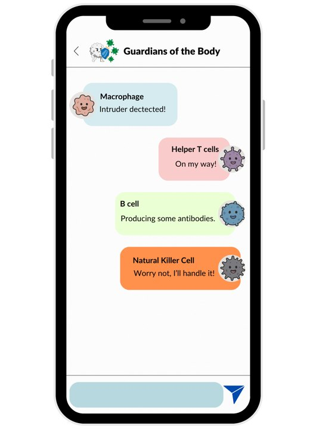
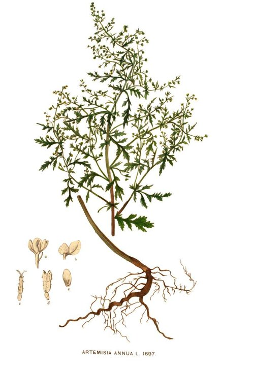
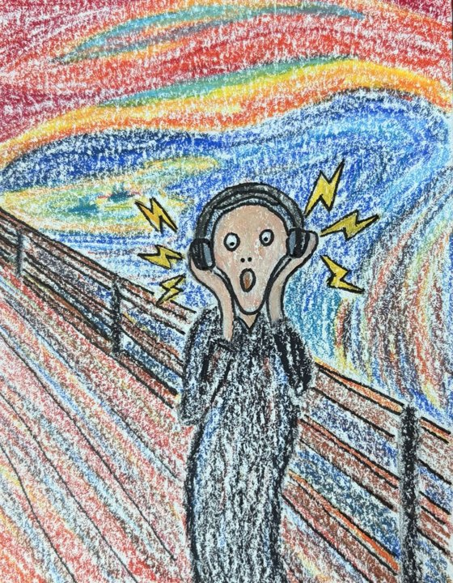

Watercolour & origami
The two things I make. Watercolour because it punishes overthinking, origami because it doesn't.
I'm from Mauritius, a small island in the Indian Ocean, and I moved to upstate New York in 2016, which was a cold introduction to the US. Most of what I do outside work is either making something with my hands or trying to learn something I'm not yet good at.
The two things I make. Watercolour because it punishes overthinking, origami because it doesn't.
How I get out of my own head after a day of staring at cluster jobs.
A newer experiment, with mixed results so far.
Learning the ukulele, which I keep meaning to actually start. I have no musical background at all, which is either the problem or the appeal.
Mauritian Creole is my first language; I also speak English, French, and Hindi. Mandarin is the current project, and it is going slowly.
I write, edit and illustrate for The Pipette Pen, UNC's science communication club, and co-direct HFROG, a trainee-run discussion group on human functional and regulatory genomics. Before that I tutored calculus and differential equations for four years.
For The Pipette Pen, UNC's science writing and communication club.


Tea leaves and test tubes: when traditional plant remedies stand up to research
The Pipette Pen (2025)
